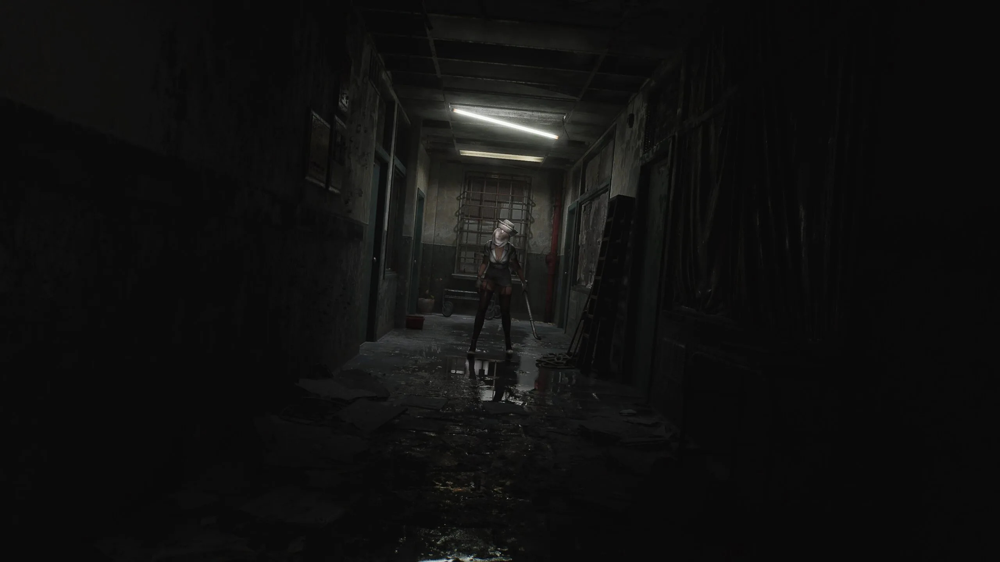

SILENT HILL
is a video game available on PC, Xbox and PS5. Created by Keiichiro and published by Konami .
This game is a four part series all developed by 'Team Silent'. In this psycological horror game you
are going to be confused and scared at the same time by which ever ending you get.
Welcome to SILENT HILL ...
You have to be aware that you will be scared beyond belief playing this game as some of the scenes and gameplay
is called by many "A bit to realistic". You will have to fight for your life and have
the freight of your life. The game is set in the mysterious town of New England where Harry Mason searches for
his adopted missing daughter. He stumbles across a mysterious cult which is where he discovers his daughters
true origin. With multiple possible game ending you will be truely scared of the mystery to come.